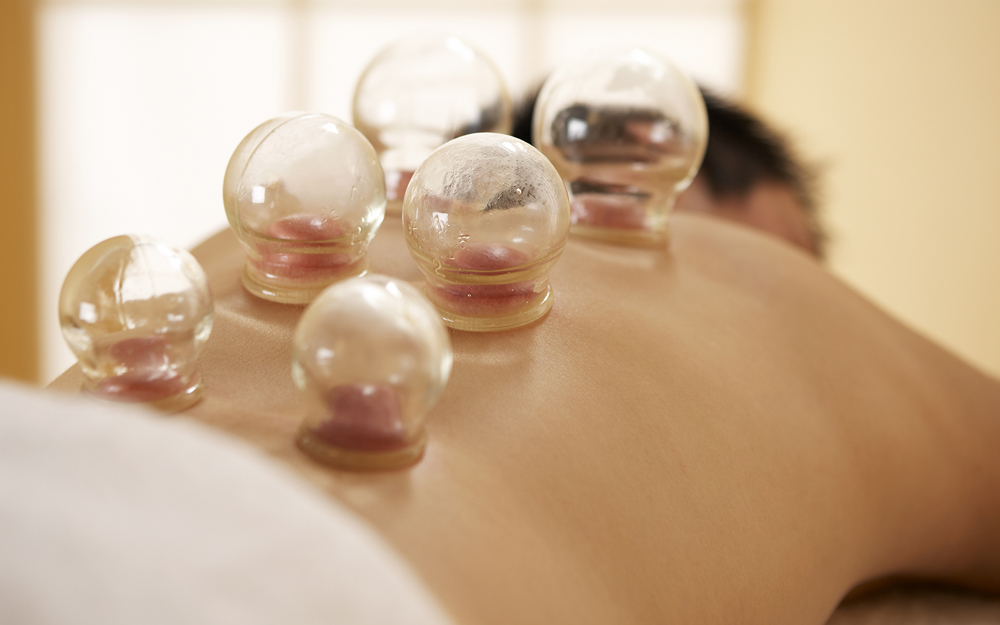

What is Cupping Therapy?
Cupping therapy is an ancient form of alternative medicine where special cups create suction on your skin. This promotes healing through increased blood flow and relaxation of deep tissues.
Benefits
- Relieves muscle tension and pain
- Promotes blood flow and circulation
- Aids in recovery and healing
- Reduces inflammation
- Helps with respiratory issues
- Promotes relaxation
- Decrease chronic pain
- Sports performance
- Helps promote lymphatic drainage, decrease swelling/inflammation
What to Expect
During your cupping session:
- Cups are placed on specific areas of the body
- Gentle suction is created within the cups
- Cups may be moved or left in place
- Treatment typically lasts 10-20 minutes
- May be combined with massage
What to Expect After Cupping
- Dizziness
- Stomach aches
- Feverish
- Light headed
- Fatigue
- Tenderness around the muscles and cupped area (Dark circular marks where cups are placed)
Types of Cupping
- Static cupping - cups remain in place
- Moving cupping - cups are glided across lubricated skin
- Flash cupping - quick suction and release
Potential Risks and Side Effects
Be aware of these common effects:
- Circular marks that last several days
- Mild discomfort during treatment
- Temporary skin discoloration
- Not recommended for certain health conditions
- Should be avoided if you have bleeding disorders
AVOID these after cupping
- Caffeine
- Alcohol
- Sugar
- Intense exercise
- Dairy
Ready to Book?
Experience the ancient healing practice of cupping therapy.
Schedule Now